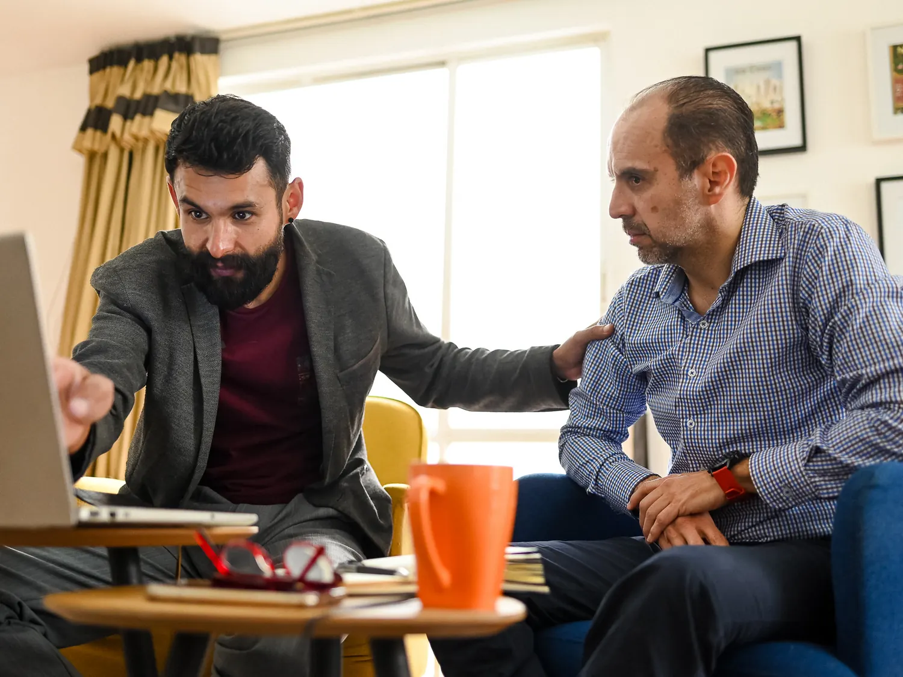
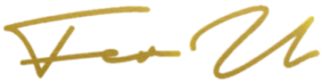

Lo que pone MetLife México
- El respaldo institucional.
- El producto y la capacitación técnica y comercial.
Promotoría de seguros · MetLife México
Tu tiempo es tu patrimonio. Construye una cartera y una marca personal que sean tuyas, con el respaldo de MetLife México y un líder de equipo que es coach de emprendedores.
5 minutos, gratis y privada. ¿Ya lo tienes claro? Agenda tu Sesión de Mapeo. ¿Dudas? Más información por WhatsApp.

Buscar trabajo se volvió un trabajo.
Vender sueños no es construir un negocio.
Un negocio basado en la confianza entre personas es más difícil de reemplazar.
Los seguros existen para que otros se sientan protegidos. Tú puedes hacerlo posible.
Una cartera de clientes es tiempo convertido en patrimonio.
Tu aseguradora ya te enseña lo técnico. Lo que sumo es lo que te diferencia con tus asegurados.
Tu ruta de trabajo es la de tu Evaluación Espejo. La calibramos juntos en tu Sesión de Mapeo.
No hay un curso fijo. Trabajamos cada dimensión cuando la necesitas, y tu radar de 12 áreas marca el orden.
Tu identidad, tu seguridad, decidir y actuar por ti, y enfrentar el rechazo.
Tu cliente ideal, tu marca personal, la experiencia de compra y de servicio, tus referidos y tu cartera, con apoyo de IA.
Tu autoliderazgo, tu plan diario y el poder de tu palabra. Si quieres, también liderar tu propio grupo con tu propia marca.
El orden cambia según de dónde vengas: quien ya tiene cartera suele empezar por su marca y su negocio.
Primero llega el cambio personal; los resultados del negocio vienen entre 3 y 6 meses después.
Es un grupo pequeño, con lugares limitados, y lo diseñamos contigo. Antes de decidir hablamos de las condiciones con claridad: qué recibes, qué pones tú y qué recibo yo. Cada persona del grupo puede construir su propia marca.
“Me siento empoderado internamente. Ser vulnerable con alguien como Fernando fue verdaderamente hermoso.”
Casos documentados de mi trabajo previo con agentes y agencias, no promedios. La promotoría está formando su primer grupo. Los resultados varían de una persona a otra.
Lo que trabajas conmigo (tu Mapeo, tu bitácora y tus sesiones) es privado, y nada de eso llega a MetLife. Lo que produces en campo sí lo veo como promotor, porque lo necesito para operar, y lo sabes y lo aceptas por escrito antes de empezar. Trabajar tu parte personal es opcional y nunca condiciona tu lugar en la promotoría.

Emprendí 18 veces, gané y perdí todo, y aun así no podía habitar mi propia piel con gusto. Lo que me cambió no fue otro logro: fue volver al origen.
Por eso aquí tu líder no te enseña solo lo que a él le funcionó: te acompaña a construir lo tuyo. Una raíz metodológica probada durante catorce años se afinó durante seis años en el sector asegurador.

¿Cuál es el origen de tus problemas? ¿Sabes cuál es el tuyo?
Empieza con tu Evaluación Espejo: 5 minutos, gratis y privada. Después, tu Sesión de Mapeo.
¿Prefieres escribirme? Más información por WhatsApp
¿Ya eres agente y solo quieres formación? Ve a la página para agentes.